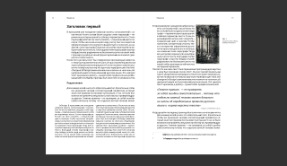
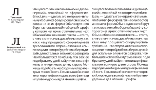
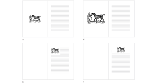
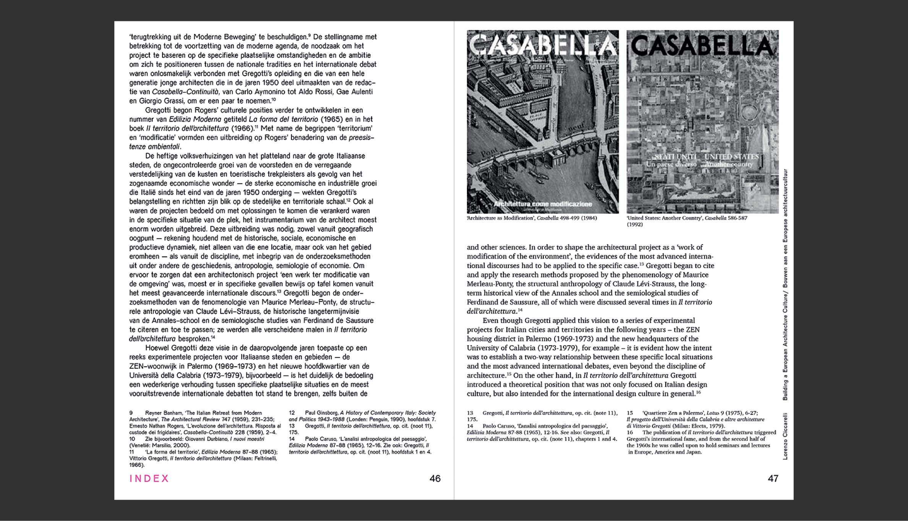
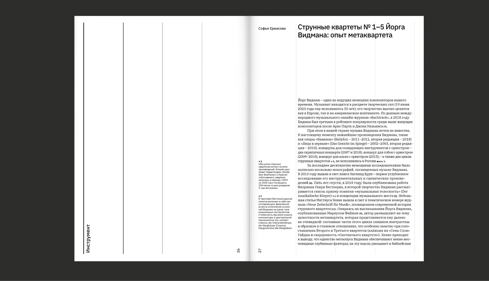
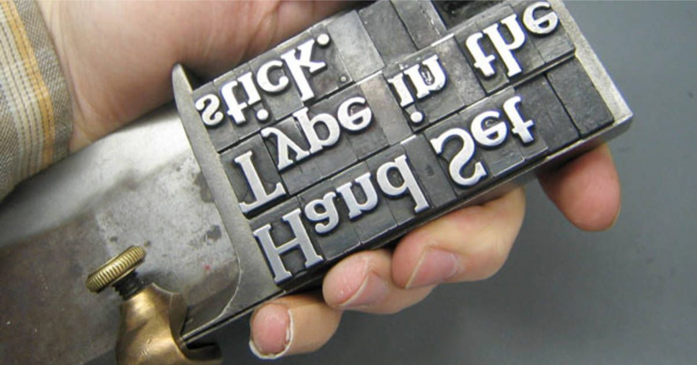

Элементы разворота
В этой статье мы узнаем, из каких объектов состоит разворот, а в следующем — как собрать их в единую композицию.
Кратко обсудим каждый элемент разворота и требования, который он предъявляет дизайнеру. Как выглядит типичный блок текста, какого размера делать номер страницы, куда лучше располагать картинки. Твоя цель — познакомиться с основными особенностями, потому что они будут влиять на твой дизайн.
Объекты на поверхности листа можно разделить на видимые и невидимые. Еще их можно свести к таким типажам:
- Текст имеет свойства плоскости
- Изображения имеют свойства объема
- Белое пространство — это пауза, проведенная граница для взгляда, важный инструмент композиции

←
1
Видимые элементы разворота
Видимые элементы
Основной текст. Чаще всего это максимально «не дизайнерский», спокойный по оформлению блок. Цель — сделать его непримечательным, чтобы мозг фокусировался на смысле слов, а не на их форме. Обычно для него берут так называемый «наборный» шрифт, у которого нет ярких отличительных черт.2 Обычно блок основного текста — это то, с чего стоит начать дизайнить книгу, так как к нему проще всего сформулировать требования. Это отправная точка в композиции, от которой удобно выбирать дизайн для остальных элементов разворота. Чем больше текст по объему, тем важнее подобрать ему удобный для чтения шрифт, кегль и интерлиньяж, длину строки. Можешь подобрать необходимые параметры в главе «Текст». Если в вашей книжке текст короткий, можно дать волю фантазии и брать неудобные для чтения шрифты.

←
2
Разница между текстовым и акцидентным шрифтами при долгом чтении
Второстепенный текст. Это повествование, которое идёт параллельно с основным текстом, но имеет свой сюжет, второстепенный по отношению к основному. Дизайн блоков такого текста должен отражать его место в иерархии. Есть несколько визуальных приёмов, позволяющих изобразить нужный смысловой оттенок. Например, чем короче строка, тем текст менее значимый. Другие способы будут описаны в главе «Иерархия».
Заголовки. Помогают ориентироваться по разворотам, как шмуцтитулы по книге. Чтобы делать их заметными, необязательно делать их жирными и большими. Есть способы поинтереснее, их ты найдёшь в главе «Рубрикация».
Фото. Размер изображения и расположение3 на листе относительно текста способно сказать о том, какую роль эта картинка играет в повествовании. Фото может служить тексту как иллюстрация, подтверждение словам. В этом случае его лучше располагать рядом с текстом. Или, в другом случае, стоять в начале текста, вне колонок, говоря «я тут задаю атмосферу». Его можно избавить от фона обтравкой, по-разному поставить в разворот: навылет или внутрь колонки. Таким образом оно прелестно раскрывается во взаимодействии с текстом. Подробнее можно будет почитать в главе «Картинки».

←
3
Как расположение фото влияет на ощущение ценности материала
Цитаты. Цитаты часто привлекают внимание и по иерархии находятся выше основного текста. Классический способ — набрать их бОльшим кеглем. Также можно сместить цитату относительно линии блока обычного текста.4

←
4
Идея для оформления цитаты – смещение блока текста
Далее пойдут служебные элементы. Они дают читателю возможность узнать источник информации, данной на развороте, или быстро сориентироваться в книге. То есть не несут основной смысловой нагрузки.
Сноски. Сноски чаще всего самые незаметные элементы на странице. Через сноски автор ссылается на чужие исследования. Им не обязательно быть снизу под чертой, как в классических книгах. Есть разный способ сверстать их. Расположить их в конце5 текстового блока, или поставить их группой в отдельной части страницы. Также их можно расположить в отдельной6 колонке, но это более редкий вариант, так как выделять колонку для сносок означает делать их заметными, а такое нужно не во всех книгах. Обычно для сносок берут кегль меньше основного текста, либо делают общий тон светлее, сменив начертание на более тонкое. Нумерация должна быть сквозной для всей книги, то есть не нужно в каждой отдельной главе начинать нумерацию с единицы. Исключение – сборник отдельных статей, сверстанных в одно издание.

←
5
Сноски под блоком текста
Для того, чтобы визуально показать их положение в иерархии, сноски сделаны меньшим кеглем и разбиты на две колонки, чтобы длина строки была маленькой. Обрати внимание, на нумерацию сносок в тексте – она незаметна при беглом взгляде на разворот. Все это – классическое решение для оформления сносок

←
6
Сноски в отдельной колонке
Так как мы читаем слева-направо, то сноски в левой колонке будут привлекать чуть больше внимания, чем в правой
На рисунке7 как и на предыдущем примере5 для сносок используется меньший кегль и они расположены внизу страницы. Но в этом макете для них выделено свое пространство, которое не меняется на протяжении всей книги. Хотя сноски набраны меньшим кеглем, они занимают много места, и такое решение предполагает, что их будет ограниченное количество на каждой странице. В этом макете они выступают в качестве акцента. Обрати внимание, насколько жирное начертание применяется для нумерации: это позволяет при беглом прочтении найти нужный отрывок в тексте и сопоставить его со сноской

←
7
Сноски снизу текстового блока
Колонцифра. Это номер страницы. К нему примерно такие же требования, как к колонтитулу. Обычно колонцифра располагается снизу / сверху блока, но существует много других, интересных способов. Мы научимся делать их симпатичными и незаметными в соответсвующей главе.
Это объекты, которые чаще всего можно встретить в книге. Однако, в твоей книге может быть совершенно другой набор, другое распределение внимания. Особенности элементов разворота, которые ты только что узнал, помогут тебе быстрее выбирать оформление каждого из них.
Белое пространство
Начинающие дизайнеры часто страдают тем, что фокусируются лишь на видимых объектах разворота. Из-за этого в макете может не хватать воздуха, взаимоотношения между элементами оказываются неясными, а поля вялыми. Именно отношение к белому как к полноценному участнику композиции помогает справиться с вышеупомянутыми недоработками.

←
8
Литеры
В эпоху металлического набора каждое незаполненное пространство страницы создавалось такими же физическими элементами, как те, с которых печатались буквы. Маленькие металлические бруски8 задавали межстрочные расстояния, а также отступы.9 Такие элементы не только организовывали текст, но и задавали композиционный ритм. Именно благодаря материальности белого пространства старинные книги выглядят столь гармонично: они подчинялись тем же возможностям нашего физического мира, что и буквы.

←
9
Инструмент «composing stick» с собранными в нем строчками текста, состоящими из литер и шпаций
Белое пространство — это не просто «пустота». Это активный элемент композиции, регулирующий визуальные связи, иерархию и ритм. Управляя белым, дизайнер создаёт гармонию и делает восприятие книги удобным и увлекательным.
Функции белого
- Отделять объекты друг от друга. Это относится к правилу «внешнего-внутреннего», о нем будет через пару абзацев в главе «Композиция»;
- Создавать иерархию между объектами. Акцентировать внимание на конкретных элементах – чем больше белого пространства вокруг фигуры, тем она важнее;
- Это пауза. Оно тормозит глаз и дает передышку при чтении;
- Создает безопасное поле для обреза.